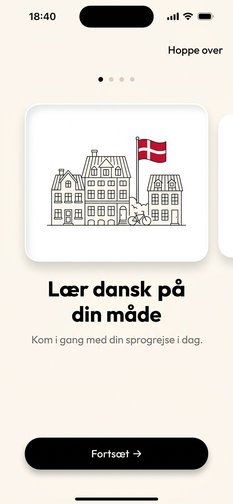
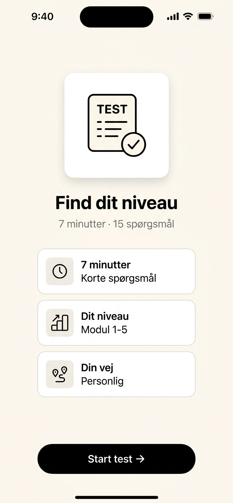
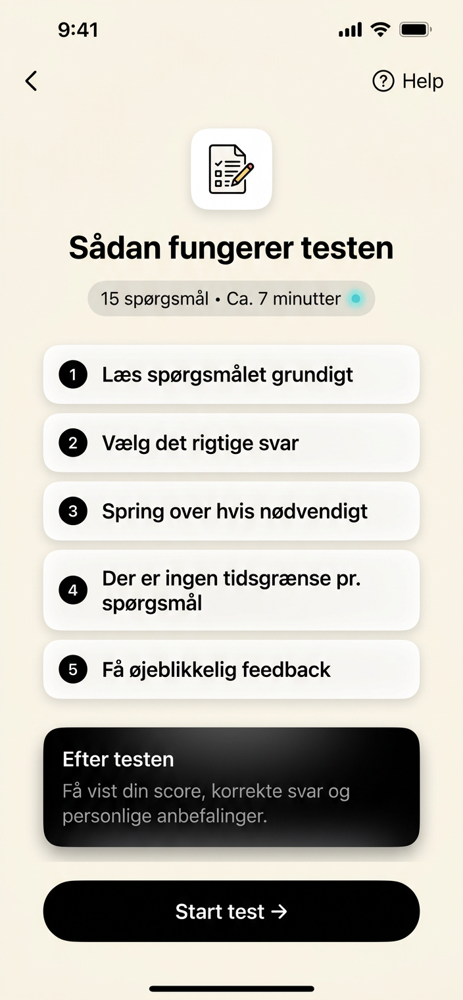
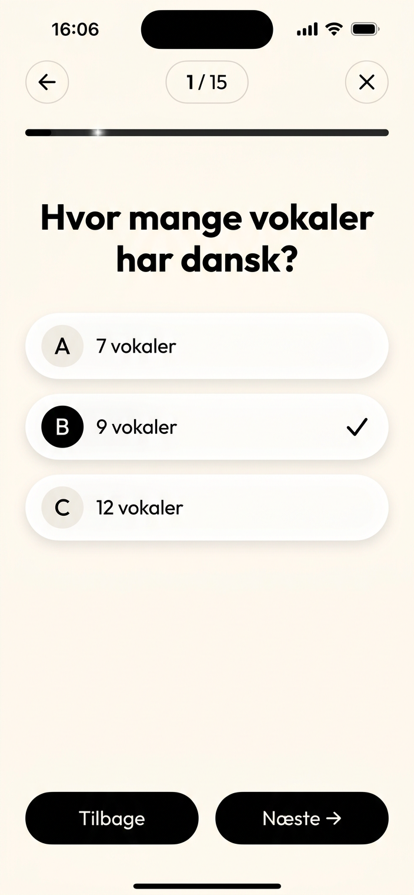
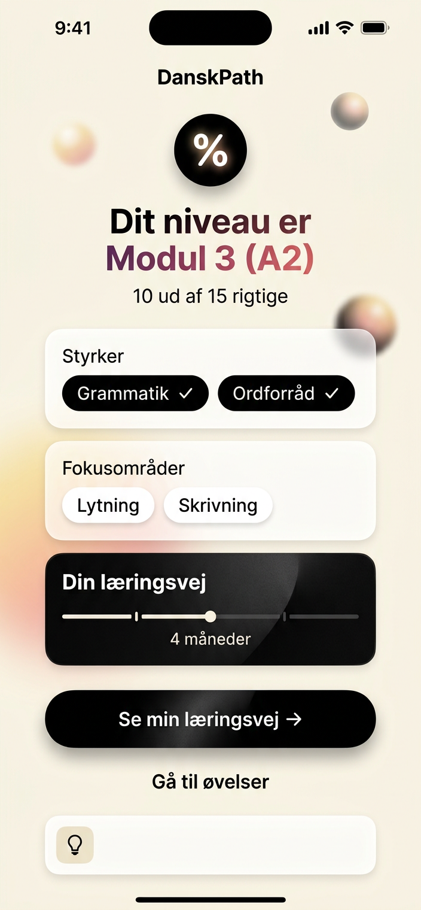
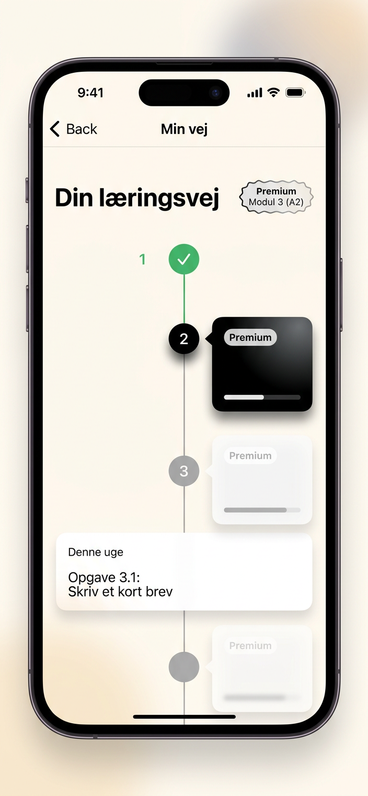

D
DanskPath • After Test Journey
Live: https://danskpath.onrender.com • Build 6b5707c Apple Premium
M1 → PD3 Full EducationApple Premium iPhone 390px
What happens after
you take the test?
Not just a % score. We analyze per-level, per-category, per-type, consistency and time — then build a personal path from your weakest skill <60% first. One clear primary action at each screen.
Complete Flow — 8 screens, one purpose each
1 • Welcome
Lær dansk på din måde
3-step onboarding • Danish line art • progress dots • no overflow iPhone

→
2 • Assessment Landing
Find dit niveau
7 min • 15 Q • 3 cards explanation • Start test →

→
3 • Instructions
Sådan fungerer testen
5 bullets • what happens after • usage • Start Test goes directly to Q1

→
4 • Test Q1-15
Test = only test
Distraction-free • no learning path • randomized A/B/C • variation engine 5,100+ variants • progress shimmer 4px • 1 purpose 1 action

Q: Hvor mange vokaler har dansk? Options shuffled per userSeed, hashStr prevents pattern
→
5 • Results Analysis
Dit niveau — beyond %
67% Modul 3 • levelPct A1/A2/B1/B2 • strengths black pills 75%+ • focus white • consistency • timeAvg • timeline

✓ Strength 75%+• To improve <60%○ Borderline
→
6 • Path
Din læringsvej
Only relevant stage • vertical timeline • active black • weekly writing • next 4 weeks • passing criteria

→
7 • Practice
Hej klar til at øve?
One recommendation • why now • unlocks real life • 15 min one hand • can-do wins • pace heatmap

Where is the analysis? — VerdictEngine.js
Two learners can both score 80% but need different paths. Code: src/lib/verdictEngine.js calculateVerdict()
Analysis 1 • Beyond %
Level determined by per-level, not just total %
if A1 <50% → Modul 1 (A1)
else if A1 ≥70% && A2 <60% → Modul 2 (A1-A2)
else if A2 ≥65% && B1 <60% → Modul 3 (A2)
else if B1 ≥65% && B2 <60% → Modul 4 (B1)
else if B1 ≥70% && B2 ≥60% → Modul 5 PD3 klar
else if A1 ≥70% && A2 <60% → Modul 2 (A1-A2)
else if A2 ≥65% && B1 <60% → Modul 3 (A2)
else if B1 ≥65% && B2 <60% → Modul 4 (B1)
else if B1 ≥70% && B2 ≥60% → Modul 5 PD3 klar
If A1 is 40% you stay Modul 1 even if overall 80% guessed. Prevents false high level.
A1
40%
A2
85%
B1
90%
Result
Modul 1
Analysis 2 • Category + Type
Strengths / Weaknesses / Borderline + Consistency
Strengths 75%+
✓ V2 inversion
Keep strong — don't over-practice
To improve <60%
• Listening → Reduktion d'er
We build path from these first
Consistency + Time
Inconsistent: easy 20% vs hard 90% — suggests guessing
Avg 4s/q — too fast, may be guessing | Slow careful | Normal
Avg 4s/q — too fast, may be guessing | Slow careful | Normal
Timeline • Why this path?
Estimated: 4 måneder til PD3 med 15 min/dag, 4 dage/uge — base from your level + 0.5 month per weakness. Why this path? Your assessment shows listening, V2 less 60%. We focus V2 first because 80% of B1 errors are V2.
Base Modul 4: 4 months + 2 weaknesses × 0.5 = 5 months → 3-4 days/week enough — research: enough to pass Modultest 3 in 3 months
Personal Path — 4 steps built from weakest
1
V2 + inversion
I morgen skal jeg... • Week 1-2 • 80% B1 errors
2
Ledsætning at han ikke kommer
ikke before verb • Week 2-3
3
Kollokationer holde et møde
Week 3-4 • speech not single words
4
Lytning uden tekst DSB DR
Week 4-5 • 25% stavelser sluges
How they start learning — PracticeView recommendation engine
One recommendation — not a list
System weights: listening 60% • 250 new words Box0 • 5/17 grammar • weakest skill <60% • your personal goal. Not random, not curriculum.
Example recommendation
V2 rule — I morgen skal jeg...
Verb on position 2 • 10 min • Goal-driven: job interview
In Danish verb must be on position 2 in main clauses. In English you do it sometimes (Never have I...). In Danish always. Fastest way to fewer errors.
Unlocks in real life
Say "I morgen skal jeg til møde" correctly
→ At work, colleagues understand first time
After clicking Practice → where learning happens
Grammar
Infinite variants
5,100+ variants • 30-day no-repeat • variationEngine.js • Anna København seed different per learner
Vocab
SRS Box 0→5
Collocations not single words • holde et møde • træffe beslutning • Box0 250 new
Listening
No transcript first
DSB, DR, telephone borgerservice • 25% reductions d'er skaddu • second time 30% more
Writing
Weekly new • No repeat 60d
30-50 → 150-200 words • PD3 structure indledning 2 args konklusion • jo/da/vel
Motivation — no shame
✓
·
✓
·
✓
·
✓
3-4 days/week is enough — research: enough to pass Modultest 3 in 3 months. No streaks. No hearts.
Roadmap for each case possible — Journey Maps
StageEngine.js defines M1→M5 with genuine difficulty increase: sentence 3-6 words → 15-25 words with 2-3 grammar combined, vocab 200→1354 active, writing 30-50→150-200 words. Here are 4 real personas.
Case 1 • New learner
M1 (A1) → PD3 • 9 months • From zero
Alphabet æøå • SVO • en/et • 0-100 tal • 200 words
9 mo
15 min/day • 4 days/week
10% → 100% PD3
Journey Map — Vertical Timeline
1
Modul 1 — Foundation A1Week 1-6
Sentence: 3-6 words: Jeg hedder Ali. Jeg bor i Aarhus.
Grammar: alfabet æøå, SVO, nutid -r, en/et, tal, spørgsmål hv-ord • Vocab: 200w family home time daily routine • Writing: 30-50w S-V-O present only
Alphabet dictation 80%SVO 80%en/et 60%
2
Modul 2 — Daily life A1-A2Week 7-14
Sentence: 6-9 words: I dag arbejder jeg hjemme, fordi jeg er syg.
Shift: SVO → V2 inversion (biggest A1→A2), present → past -ede, 30-50 → 60-80w with fordi • Listening: DSB announcement
3
Modul 3 — Independent A2-B1Week 15-24
Sentence: 9-14 words: Jeg ved, at håndværkeren ikke kommer i morgen, fordi han er syg.
Shift: Main only → subordinate flips ikke before verb, -ede → har/er perfect, 60-80 → 80-120w, telephone without transcript 25% reductions
4
Modul 4 — Fluent everyday B1Week 25-32
Sentence: 12-18 words: Selvom skoene kun er to uger gamle, er de allerede i stykker, derfor vil jeg gerne have pengene tilbage.
Strong verbs drikke/drak/drukket, sin/hans, selvom/hvis/når/da, debate 120-150w fordele/ulemper
5
Modul 5 — PD3 ready B1-B2Week 33-36 • Exam
Sentence: 15-25 words: Det er jo klart, at selvom man har boet her i tre år, har man ikke nødvendigvis forstået...
All 17 topics combined 2-3 rules, passive, relative der/som, jo/da/vel, 150-200w PD3 structure indledning 2 args konklusion, culture Folketing 179 flexicurity
What changes genuinely?
| Sentence | 3-6w → 15-25w |
| Grammar | 1 rule → 2-3 combined |
| Vocab | 200 → 1354 active, 3000 receptive |
| Writing | 30-50 → 150-200 PD3 |
Case 2 • A2 learner — Most common
M3 (A2) → PD3 • 6 months • Daily life done, needs independence
Diagnostic: A1 85% A2 70% B1 40% B2 20% → V2 okay, subordinate weak, listening 45%
6 mo
Base 6 + 2 weak ×0.5 =7 → 6 with focus
Week 1-2 • Focus V2 + Listening
Why: Assessment shows listening 45% <60%, V2 borderline 62% • Practice telephone borgerservice no transcript, DSB DR
ListeningReduktion d'er skaddu
Week 3-6 • Ledsætning
Core: at han ikke kommer vs kommer ikke • har/er perfect • 80-120w email landlord
Subordinate 60%
Week 7-14 • B1 Fluent
Core: Strong verbs, sin/hans, selvom, debate 120-150w • DR news multi-speaker
Week 15-24 • PD3 Exam
150-200w structure for det første derudover til sidst • jo/da/vel • Folketing 179 • 2 months exam prep
Case 3 • B1 learner — Vipin case
M4 (B1) → PD3 • 4 months • Fluent everyday, needs exam format
Diagnostic: A1 90% A2 80% B1 68% B2 45% • Strength V2, weakness writing + modal particles jo/da/vel • Goal: job interview
4 mo
Base 4 + 1 weak ×0.5 =4.5 → 4
Vipin's personal path — from verdictEngine
1
Bindeord jo/da/vel — nuance
jo = shared knowledge, vel = confirmation, da = surprise • B2 cost in PD3 writing
2
Skrivning 150-200w PD3 structure
Indledning, 2 argumenter, konklusion, for det første/derudover/til sidst • 70% needed
3
Kollokationer arbejde: holde fyraften
Goal-driven: job interview • 1000→1354 words
4
Culture + PD3 format
Folketing 179, flexicurity, jantelov, DR podcast normal speed • Exam simulation
PracticeView for Vipin — what he sees today
Flat structure at work • 10 min
Your listening 65% and V2 solid. Next: understand Danish work culture — directly relevant for PD3 and job.
→ Unlocks: Understand jantelov at work — you understand why Danes share credit
Case 4 • B2 PD3 ready
M5 (B1-B2) → PD3 • 2 months • Exam format + time pressure only
Diagnostic: A1 95% A2 88% B1 82% B2 70% • No weakness <60% • Needs exam format, culture 8/10, writing structure
2 mo
No new grammar • only exam
Week 1-3 • Exam format
PD3 Delprøve 1-4 format • Læsning gapped text • Lytning podcast fast • Skrivning 150-200w structure • Mundtlig picture description monologue discussion
Week 4-6 • Culture + Speed
Folketing 179, Grundlovsdag 5. juni, flexicurity, jantelov • Time pressure 40-60s/Q • All 17 topics combined 2-3 rules at once
Week 7-8 • Mock exam
Full PD3 simulation • 150-200w with jo/da/vel • DR podcast 60% without transcript • Pass criteria 80% grammar 80% vocab 75% listening 70% writing
Live App — Test it now
All 4 cases start from same test — path differs based on your weaknesses